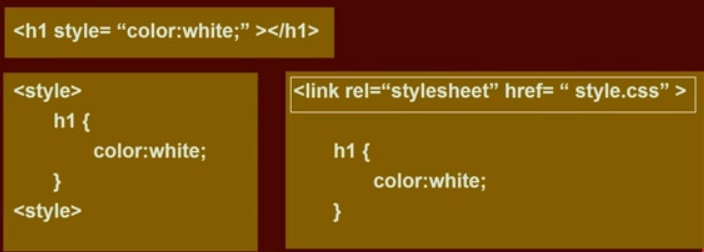

¿Qué es HTML?
El lenguaje de marcado de hipertexto, o HTML (HyperText Markup Language) por sus siglas en inglés , es el estándar para armar documentos que serán desplegados en un sitio web en el navegador. HTML es el lenguaje utilizado para crear la estructura de un sitio web. Para crear este sitio, se empieza creando un documento en formato HTML.
El navegador "lee" el archivo HTML (el texto y las etiquetas que están adentro) y las presenta según las
reglas
del
lenguaje. Por ejemplo, los textos que están dentro de las etiquetas <h1> son
considerados
encabezados o titulares,
mientras que los textos dentro de las etiquetas <p> son considerados párrafos. Por eso, el
texto ¡Hola Mundo! se
visualiza mucho más grande que el texto Esta es mi primera web.
Estructura de una página HTML
- El elemento
<html>es el elemento raíz de una página HTML. - El elemento
<head>contiene meta información acerca de la página HTML. - El elemento
<title>especifica un título para la página HTML. - El elemento
<body>define el cuerpo del documento, y contiene todos los elementos visibles, tales como encabezados, párrafos, imágenes, hyperlinks, tablas, listas, etc. - El elemento
<h1>define el encabezado principal. - El elemento
<p>define un párrafo.
El contenido dentro de la sección <body> se muestra en el browser. El contenido dentro del elemento <title> se muestra en la barra de título del browser.
Comentarios en HTML
2
3
4
¿Qué es CSS?
Las hojas de estilo en cascada, o CSS (Cascading Style Sheets) por sus siglas en inglés, se usan para la presentación de un sitio web. Permiten darle estilo a una página web: colores, formas, fondos, etc.
Se llaman en cascada por la forma en que se aplican los estilos. Ejemplo: si programas que el color de las letras sea rosado, eso se aplica al texto. Si líneas más abajo le indicas que sea azul, se cambia el color del texto. Y si más abajo vuelves a cambiar a verde, éste será el color definitivo del texto, creando un efecto de cascada en la forma de realizar los cambios.
El código necesario se escribe en un archivo con extensión .css.
Cuando tenemos un sitio web con varias páginas podemos utilizar un solo archivo .css que contenga el código a aplicar en todas las páginas del sitio.
Existen tres formas de aplicar estilos CSS:
- Inline: dentro de la etiqueta en la que quiero hacer el cambio uso el atributo style con su respectivo valor.
- Usando la etiqueta style dentro dentro del head de la página y especificando el elemento que queremos modificar.
- A través de un archivo .css externo al que se llama desde la página que se quiere modificar. Ésta es la mejor forma de hacerlo.
Las dos primeras formas no son consideradas buenas prácticas y sólo deben utilizarse cuando se está probando código o cuando el sitio web es muy pequeño y no hay muchos estilos que aplicar.
